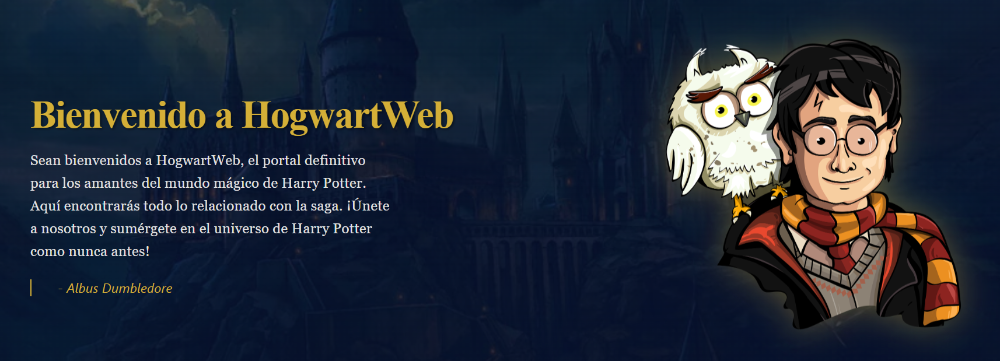

<div class="lista-proyectos">

  <div class="proyecto-card">
    <div class="proyecto-header">
      <span class="label">FILE:</span>
      <span class="nombre-archivo">Pagina de Harry Potter (HogwartsWeb)</span>
      <span class="status stable">[STABLE]</span> </div>

    <div class="proyecto-content">
      <div class="stack-block">
        <div class="tech-tags">
          <span class="tag">
            
            SpringBoot
          </span>
          <span class="tag">
            
            MYSQL
          </span>
          <span class="tag">
            
            Railway
          </span>
          <span class="tag">
            
            React
          </span>
          <span class="tag">
            
            JavaScript
          </span>
          <span class="tag">
            
            HTML
          </span>
          <span class="tag">
            
            CSS
          </span>
        </div>
      </div>
      
      <div class="descripcion-block">
        <h3 class="key">DESCRIPTION:</h3>
        <p class="text">
          Se trata de una página web ambientada y diseñada en el mundo mágico
          y maravilloso de la saga de Harry Potter, que destaca entre el resto
          por la gran interacción que ofrece el usuario. Más allá de contar con
          un cuestionario que te dice a que casa pertenece, dispone de una serie
          de minijuegos con los que puedes ganar puntos. Con esos puntos, puedes
          canjearlos en el apartado de la Tienda e ir comprando algunos de los 
          objetos iconicos de la saga. </p>
      </div>

      <div class="preview-block">
        <div class="contenedor-img">
          
        </div>
      </div>

    <div class="proyecto-actions">
      <a href="https://tu-demo-aqui.com" target="_blank" class="btn-action">
        <span class="cmd">./exec</span> Acceder
      </a>
      <a href="https://github.com/tu-usuario/tu-repo" target="_blank" class="btn-action">
        <span class="cmd">./view</span> Revisar Código
      </a>
    </div>
  </div>


</div>
